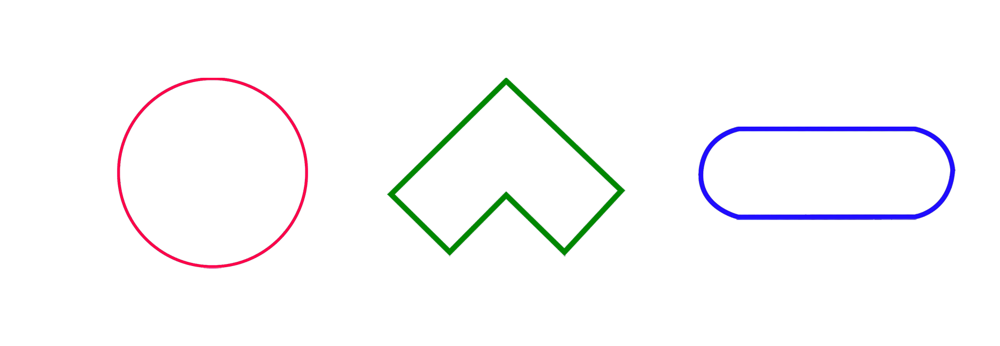
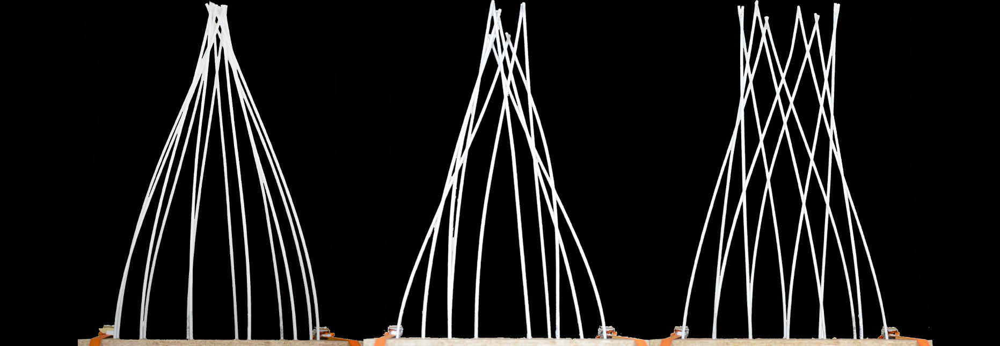
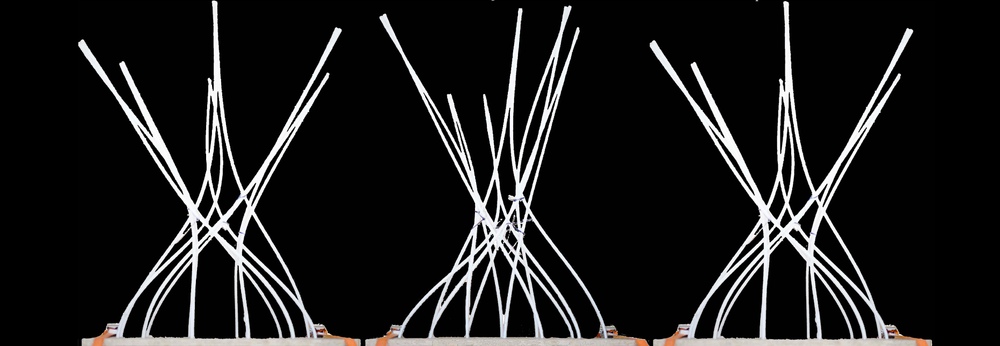
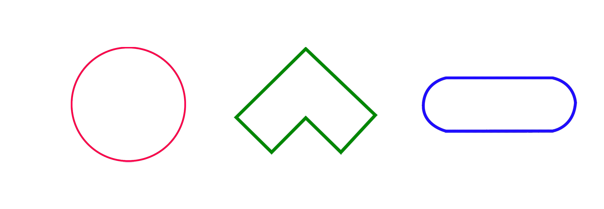
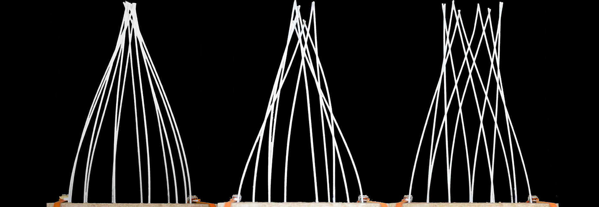
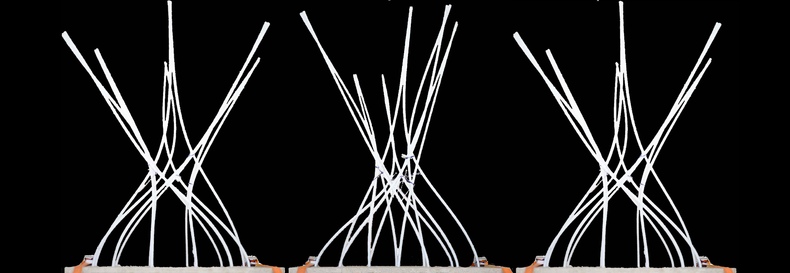

Ambient-Exp is based on an experiment that I began in my first year.
Where I discovered the work of the Self-Assembly lab and Skylar Tibbits and their Transformable Meeting Spaces project.
The idea is to experiment with 'woven' physical modular systems, and the first part of the experiment starts by drilling holes in different shapes that I've traced out beforehand on a board where I've placed PVC tubes and then 'woven' them in.
The principle of the "woven" system is that it may be in motion.
explained earlier lead to formal differences in this system.
As a result of these experiments, I decided to produce a lamp that embodies my research research linked to this system.
 




